Make your own "In this town…" story video in Roblox Studio: write the rule, build the town, move the actors, film it, cut it.
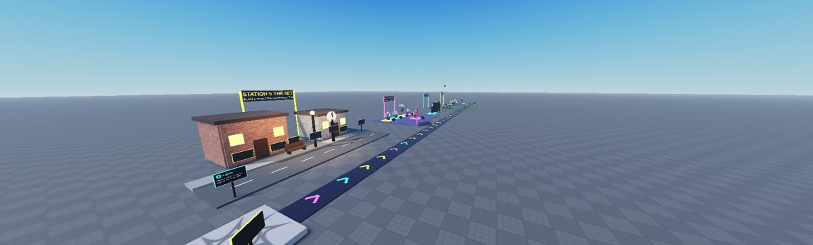
InThisTown_Tutorial.rbxl from the assignment in Classroom, open it in Studio, press Play, then press F. That's a whole "In this town" film in 20 seconds.Questions? Look in Reference I: Questions at the back first.
The project takes five lessons. Every lesson has the same rhythm:
You only have to read the Read first box at the start of each lesson. Everything else is there for when you need it. The Reference pages at the back have the extra detail: scripts, tables and fixes.
Practice place: open InThisTown_Tutorial.rbxl in Roblox Studio and press Play. Follow the arrows. It has a prop shop and eight stations: the set, movement, the camera, speech bubbles, rule effects, sound, your AI helper and a thumbnail booth. Keys while playing: F example film, T camera tour, Y camera moves, L lights, N time passes.
| What | Where |
|---|---|
| Your Story Doc: rule card, story, shot list, working diary | The Google Doc attached to the assignment in Classroom |
| Your video, 30–60 seconds, .mp4 | Classroom |
Your Studio file, name_inthistown_vX.rbxl | Classroom |
| A title, a thumbnail and a one-line caption | Classroom |
Basic is meant for grade 6, Advanced for grades 7–8, Pro for grade 9 and up. You can always go higher. If your level feels like too much, talk to me.
Every "In this town…" video follows the same four steps:
| Step | Example |
|---|---|
| 1. The rule, on screen in the first 2 seconds | "In this town, if you look back after midnight, you turn to stone." |
| 2. The consequence: what happens to people who break it | The square is full of stone statues. |
| 3. The rule-breaker: who breaks it, and why | Mira hears her name called behind her. |
| 4. The twist: the ending nobody expected | She looks back… and the statues all look back too. |
A good rule can be shown, not just told. Test it: mute the video and hide the text. Can you still tell what happens?
"In this town, everyone is sad" doesn't work: you can't film it. "In this town, your shadow walks away at midnight" works: you can see it.
It doesn't have to be scary. Funny and weird work too: "In this town, everyone walks backwards on Tuesdays."
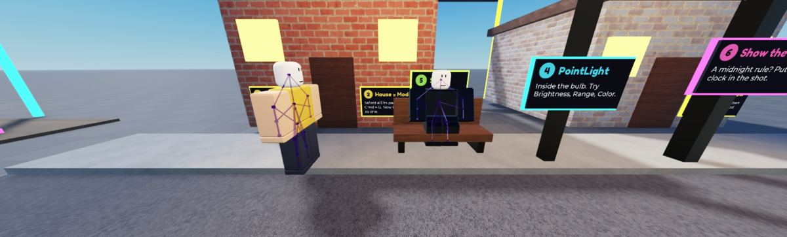
Open the Google Doc attached to the assignment in Classroom. Fill in these three parts before you open Roblox Studio.
| # | What we see | Camera | Text or sound | Length |
|---|---|---|---|---|
| 1 | The town from far away | wide, slowly moving | "In this town…" | 3 s |
| 2 | Statues in the square | medium | the rule | 3 s |
| 3 | Mira walking home | behind her | footsteps | 3 s |
| 4 | Someone calls her name | close-up of her face | "Mira…" | 2 s |
| 5 | She turns around | low angle | music stops | 3 s |
| 6 | The twist | high angle | last line | 4 s |
Shape that works: 1 the town, 2 the rule, 3 the character, 4 the rule in action, 5 they break it, 6 the consequence, 7 the twist, 8 the final shot.
Long before TikTok, the Hungarian writer Örkény István wrote egyperces novellák, one-minute stories: one strange idea, told completely straight, with a turn at the end. Sound familiar? Read one on MEK and turn it into your "In this town" video. Some that work well:
| Választék | a hat shop with "three" hats | Visszhang | an echo that only asks one question |
| Jelenség | a cork sinks, and nobody knows why | Az autóvezető | tomorrow's newspaper arrives today |
| Hírek és álhírek | a newspaper that prints the more interesting news | Ballada a költészet hatalmáról | a phone booth walks out of town |
Use your own words in the video, and credit him on the end card: "Based on Örkény István: [title]". The prop shop has a phone booth, a news stand and a hat stand ready for you.
Three rules that are not up for debate: no real people from school, no classmate as the victim or the joke, no blood or gore.
Stuck on a rule? Use Gemini or ChatGPT to get ideas, then pick one and make it your own. The story you write is yours.
Write in your diary which idea came from AI and what you changed.
In your Story Doc, under Working diary, write three lines: What I did. What went wrong or was hard. What I'll do next lesson.
You're building a film set, not a city. Only build what the camera will see. If the back of a house never appears on screen, it doesn't need a back.
Everything is made of Parts: one wall = one long, thin Part. One house = four walls and a roof. Two settings matter most:
Anchored ON for every piece, or it falls over when you press Play. Cmd + G groups the pieces of a house into one Model, so it moves as one.
Look at your shot list and write down the locations you need. Then build them on the Baseplate, far apart from each other.
And make the rule visible: a midnight rule needs a clock in the shot.
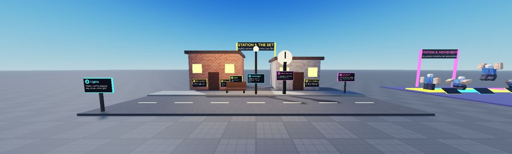
name_inthistown_v1.rbxl.v2.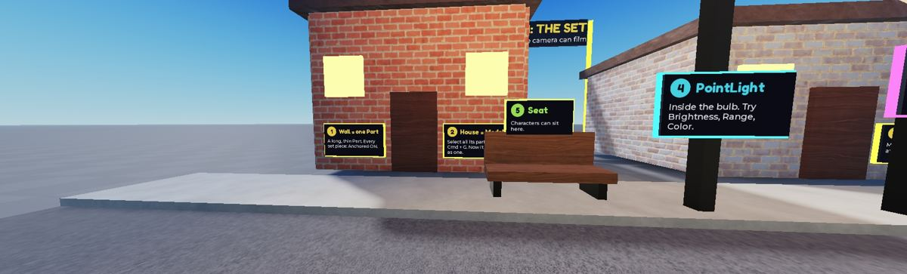
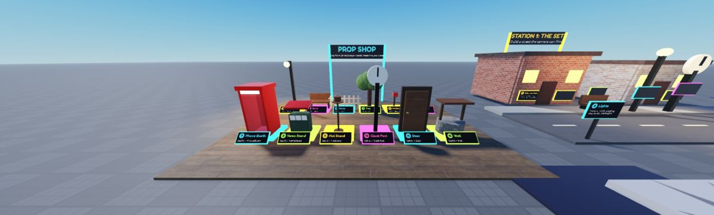
Don't spend your lesson building a bench. In the practice place, open ServerStorage → SetKit, copy a prop (Cmd + C), and paste it into your own place (Cmd + V). Then move it into position. Spend your time on what makes your town yours.
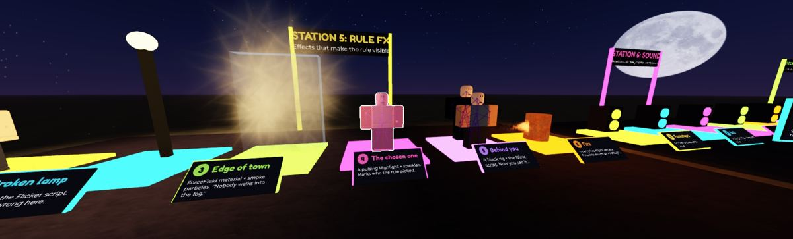
Effects show the rule without words. In the practice place, open ServerStorage → FXKit. Copy an effect into your own place: particles (Ash, FogSmoke, Sparkles) and Fire go inside a Part, the Flicker script goes inside a lamp Part with a PointLight, PulseGlow goes inside a Highlight, and Blink goes inside a character model. Effects only move while the game is playing.
Ask for steps and explanations. Always tell it where you are and what your things are called.
Before you paste any code, check the list in Reference G.
Moving around: hold the right mouse button and use W A S D, Q E for down and up. Hold Shift for slower. Lost? Select something and press F. More in Reference A.
What I did. What went wrong or was hard. What I'll do next lesson. Save your file as the next version.
Your actor is you. Press Play, find your character in the Explorer under Workspace, copy it (Cmd + C), press Stop, click Workspace and paste (Cmd + V). Tick Anchored on its HumanoidRootPart. Done: your avatar stands on the set.
Movement works with key poses. You don't draw every moment of a jump. You set 3–5 strong poses, and Studio draws everything in between. The pose before the jump, the crouch, is what makes it believable.
How you move your actor depends on your level:
| Basic | You play the character: walk, jump, sit, and use emotes like /e wave. |
| Advanced | You pose the character in the Animation Editor, like an action figure, and record it straight from the editor. |
| Pro | A script plays your animations and moves the camera. |
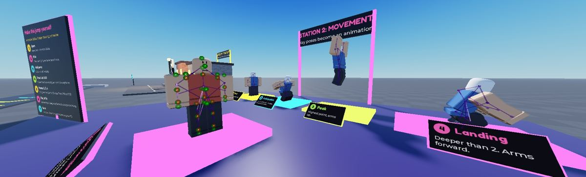
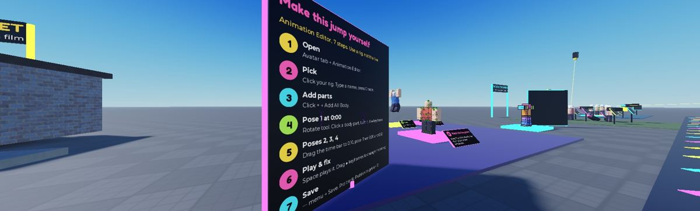
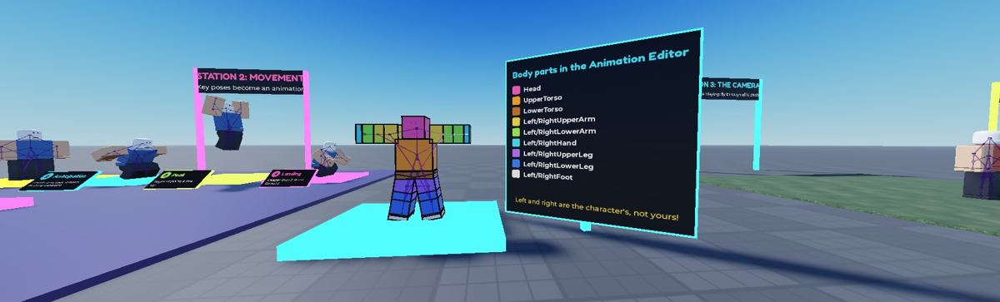
Basic: press Play and act. Type /e wave, /e point, /e cheer, /e laugh or /e dance in the chat. Walk, jump with Space, sit on a Seat.
Advanced and Pro: the Animation Editor in 7 steps:
Important: an animation from the editor plays in the editor, not when you press Play. That's normal. Record it from the editor: place the Studio camera, start Cmd + Shift + 5, press Space. Making it play in the game needs a script: that's the Pro level.
Moves this genre needs: turning to look at the camera, stepping back in fright, pointing, freezing, slowly walking away. More tips in Reference B.
Two characters, one player? Copy your avatar as many times as you need: the anchored copies stand still while you play the moving one. Or: Test tab → Clients and Servers → 2 players → Start. Two game windows open, one character in each. Different Body Colors tell your characters apart.
AI can't see your screen, so describe the pose in words.
What I did. What went wrong or was hard. What I'll do next lesson. Save your file as the next version.
Today you film. Every shot is a separate recording of 2–5 seconds. The camera tells the viewer how to feel:
| Wide | where we are | Close-up | fear, a reaction |
| Medium | what they're doing | High angle | small, helpless |
| Over the shoulder | a conversation | Low angle | big, scary |
To film: press Play, then Left Shift + P for the free camera. Fly with W A S D and the right mouse button. Record with Cmd + Shift + 5. Move slower than you think.
Change the lights to the "In this town" look: dusk, yellowish, faded, foggy.
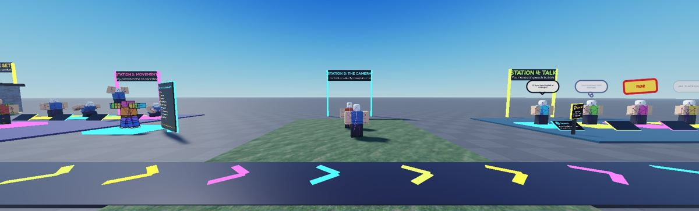
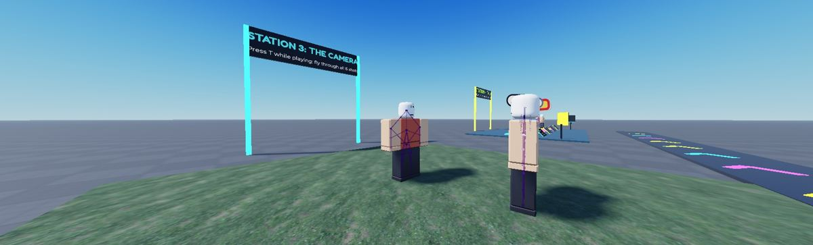
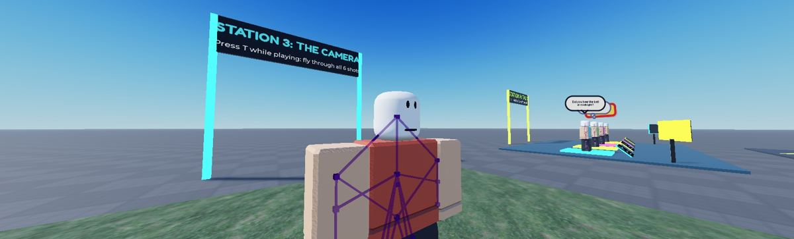
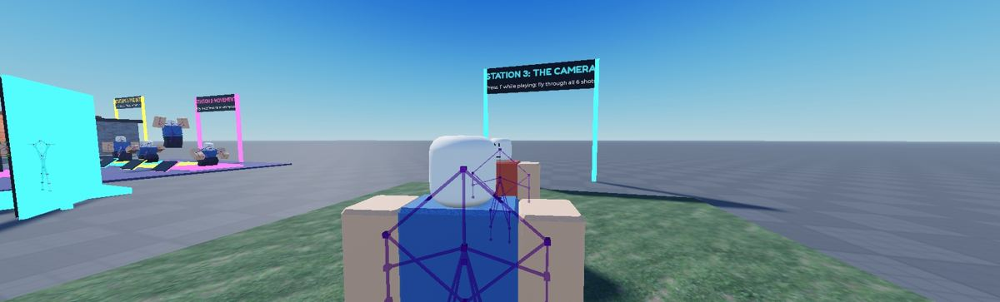
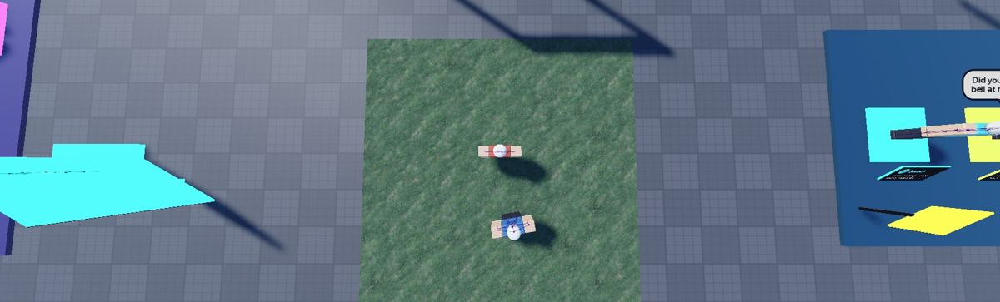
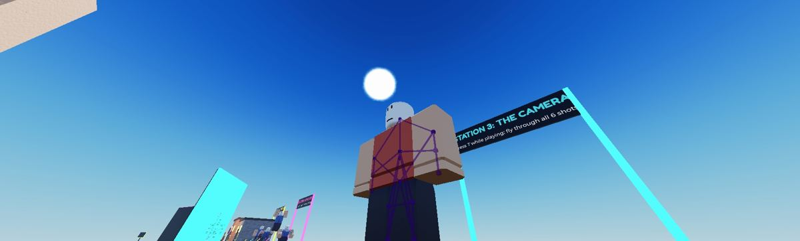
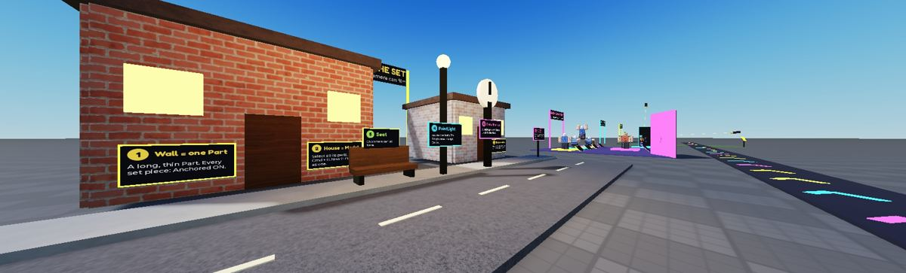
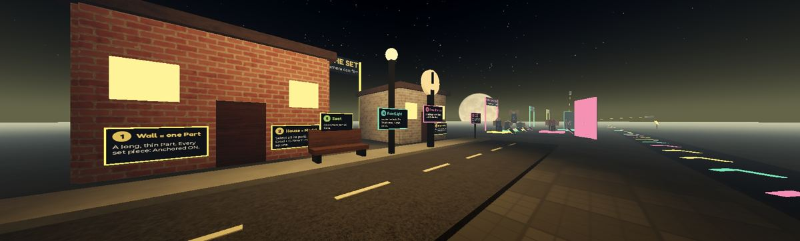
A still camera is fine. A moving one tells the viewer where to look and how to feel. Press Y at Station 3 to see all seven:
| Move | What the camera does | Use it for |
|---|---|---|
| Pan | turns left or right, stays in place | following someone, revealing what's next to them |
| Tilt | turns up or down | showing something huge, or looking down on someone |
| Dolly in / out | moves closer or further away | tension (in), loneliness (out) |
| Truck | slides sideways | walking alongside a character |
| Orbit | circles the character | a big moment, a realisation |
| Zoom | the lens changes, the camera stays | a sudden, uneasy push. Use it rarely |
| Crane | rises up or comes down | openings and endings |
With the free camera, hold Shift for slow, smooth moves: A/D to truck, W/S to dolly, E/Q to crane, the right mouse button to pan and tilt, the wheel to zoom. Pro: the scripts are in Reference C.
| Trick | How |
|---|---|
| The light changes | Film one shot at ClockTime 14, the next at 18 or 0. Press N to watch a day in 8 seconds. |
| A clock | A clock in the shot, with the hand in a different place in the next shot. |
| Cut to black | A second of black between shots, or a caption: "Three hours later." |
| Lights come on | The street lamps are off in one shot and on in the next. |
| The same shot, changed | Film the exact same view twice: the bench empty, then the bench taken. |
Many "In this town" videos use a narrator voice. You have four options, and each changes how the video feels:
| Option | Good for | Remember |
|---|---|---|
| No voice, only captions and music | mystery, and viewers who watch with the sound off | captions must do all the work |
| Your own voice | the most personal, and the easiest to fix | quiet room, close to the mic, one line at a time |
| A classmate's voice | a character who isn't you | ask first, credit them at the end |
| A text-to-speech voice | the flat, robot narrator the trend often uses | a generic voice only, never one that copies a real person. Write it in your diary |
Write the narration in your Story Doc first, in short sentences. Read it slower than feels natural. Record each line as its own clip so you can place it exactly. Think about it: what changes when a robot voice tells a scary story instead of a human?
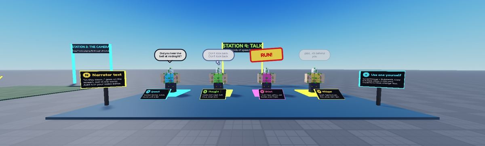
To use one: in the practice place, open ServerStorage → BubbleKit in the Explorer. Copy a bubble, paste it into your own place, then into your actor's Head, and change its Text.
shot_03.mov. All the recording details are in Reference H.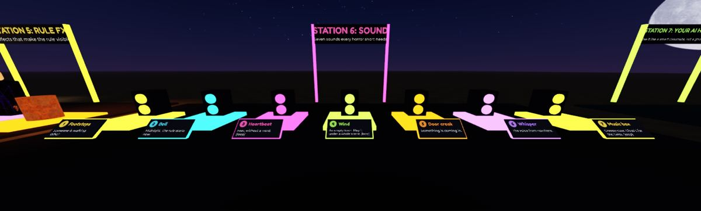
Sound is half the fear. But a Mac screen recording doesn't record the game's sound, so use Station 6 to choose what you need, and write it in your shot list. Then add the same kind of sound in your video editor in Lesson 5 (Canva and iMovie both have sound effect libraries).
Give it your story and ask for a plan. Then check it against your own idea.
What I did. What went wrong or was hard. What I'll do next lesson. Copy your clips somewhere safe.
Editing is where it becomes an "In this town" video. The rhythm:
| 0–2 s | the rule on screen, big, in the middle |
| 2–10 s | the town and the character |
| 10–40 s | the rule in action, they break it, the consequence |
| last 5–10 s | the twist, then one strong final shot |
Cut every 2–5 seconds. Keep the music quieter than any voice. Use music from your editor's own library, not a famous song.
Pick one editor: Canva (easiest, upright video), iMovie (simple, landscape only) or DaVinci Resolve (most powerful, for Pro).
Most people scroll with the sound off. Every spoken line and every important sound gets a caption, big and readable, in the lower third of the screen. Canva can make them automatically from your voice: check the spelling afterwards.
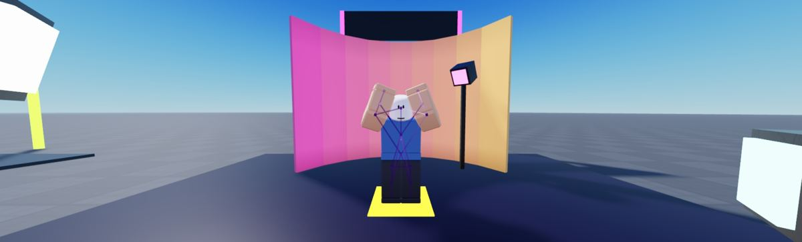
| What | How |
|---|---|
| Thumbnail | Pose your actor in the thumbnail booth with a big feeling. Freecam to the blue mark, hide the menus, Cmd + Shift + 4 to screenshot. Add 1 to 3 big words in Canva. |
| Title | Six words at most. Make people curious without giving the twist away. |
| Caption | One line, like under a real post. Add #inthistown, and the credit if you adapted Örkény. |
Think about it: the first 2 seconds, the thumbnail and the title decide whether anyone watches. That's why the trend uses the same formula again and again: it works on the algorithm. What happens to a format when thousands of people, and AIs, copy it every day?
You can't show AI your video, but you can describe your edit and ask for feedback.
☐ Video, 30–60 s, .mp4, rule on screen in the first 2 seconds
☐ Captions for every line and important sound
☐ Studio file, latest version, name_inthistown_vX.rbxl
☐ Title, thumbnail, one-line caption
☐ Story Doc: rule card, story, shot list, a diary entry for every lesson, every AI use noted
☐ Pro: 150 words on "What does a hand-made video have that an AI-generated one doesn't?"
| 5 | 4 | 3 | |
|---|---|---|---|
| It works | Plays, 30–60 s, the rule can be seen in the picture, captions all the way through | Plays, right length, the rule mostly shown, a few captions missing | Plays, but the rule is only told in text, or the length or captions are off |
| Thinking | A clear rule you can see, all four steps, a twist that surprises but makes sense | All four steps, but the twist is easy to guess or a bit random | A story is there, but one step is missing or unclear |
| Craft | A set built for the camera, varied shots with at least one move, clear poses, the rule in the first 2 s, clean cuts, good sound, a strong thumbnail and title | Varied shots, a few rough cuts or sound levels | Few kinds of shot, long or shaky shots, rough edit |
| Process | Story Doc done before filming, a diary entry every lesson with every AI use noted, numbered versions | Diary mostly complete | Gaps in the diary, or the Story Doc written after filming |
AI rule: AI helps, you direct. Use AI for ideas, explanations, scripts and fixes, and write every use in your diary: what you asked and what you changed. The story is yours, and you build the set, pose the actors, film the shots and cut the video yourself. No AI-generated video, and no "one prompt" films. See Reference G.
What I'm proud of. What I'd do differently. What I learned about how these videos are made.
After the deadline we watch every film together, on the big screen, lights off.
For each film, write two stars and a wish: two things that worked, one thing that could be even better. Be specific: "the low angle on the shadow was scary" helps more than "nice".
| Best twist | Scariest sound | Best shot |
| Best rule | Best thumbnail | Best Örkény adaptation |
| Do this | What happens |
|---|---|
| Hold right mouse button and drag | turn the camera |
| Right mouse + W A S D | move forward, left, back, right |
| Q / E | down / up |
| Hold Shift | slower, more precise |
| Mouse wheel | zoom |
| Select something, press F | fly to it |
| Cmd + D | duplicate | Cmd + G | group into a Model |
| Cmd + Z | undo | Cmd + S | save |
Never press Publish to Roblox. Save as a file, and number every version: v1, v2, v3. If something breaks, open the last good one.
A room is a floor and three walls. The camera stands where the fourth wall would be. Light it with a PointLight inside a small Part.
In the actor model, click Humanoid and set DisplayDistanceType to None.
Avatar tab → Rig Builder → R15. A plain dummy that animates just the same.
Test tab → Clients and Servers → 3 players → Start. Windows 1 and 2 are your actors, window 3 is the camera. Better in pairs: one acts, one films. Cleanup closes all windows.
| Trick | What it means |
|---|---|
| Key poses first | 3–5 poses per movement: start, wind-up, peak, stop. Studio fills the rest. |
| Anticipation | Before a jump, crouch. Before a turn, the shoulder moves first. |
| Overshoot | The hand goes a little past its target, then settles back. |
| Hold | Two identical keyframes in a row = the character freezes. Great while a caption is on screen. |
| Overlap | Not everything moves at once: head, then body, then hand. Drag one part's keyframes a few frames later. |
| Easing | Right-click a keyframe → Easing Style. Cubic or Sine is smooth. Constant is jerky, good for horror. |
| Loop | Copy the first keyframes to the end. The Loop button repeats it. |
The editor plays one actor at a time, so work shot by shot: one moving actor per shot, the others stand still. Place the Studio camera, start Cmd + Shift + 5 over the 3D view, press Space. A blue selection outline may show: crop it in your editor, or use the Pro method.
In the Animation Editor: ⋯ → Publish to Roblox. Copy the number (Asset ID). This uploads only the animation, not your place.
-- Mira plays her animation after 3 seconds
local rig = workspace:WaitForChild("Mira")
local humanoid = rig:WaitForChild("Humanoid")
local animator = humanoid:FindFirstChildOfClass("Animator") or Instance.new("Animator", humanoid)
local anim = Instance.new("Animation")
anim.AnimationId = "rbxassetid://PUT_YOUR_NUMBER_HERE"
local track = animator:LoadAnimation(anim)
task.wait(3)
track:Play()
track.Stopped:Wait() -- wait until it finishesSeveral actors: repeat for each one, and time them with task.wait().
CameraShots.1: Anchored, Transparency 1, CanCollide off.workspace.CameraShots["1"].CFrame = workspace.CurrentCamera.CFrame2, 3…-- The camera flies through the CameraShots points
local TweenService = game:GetService("TweenService")
local camera = workspace.CurrentCamera
local shots = workspace:WaitForChild("CameraShots")
local SHOT_TIME = 3 -- seconds between two points
task.wait(2)
camera.CameraType = Enum.CameraType.Scriptable
camera.CFrame = shots["1"].CFrame
for i = 2, #shots:GetChildren() do
local target = shots[tostring(i)]
local tween = TweenService:Create(camera,
TweenInfo.new(SHOT_TIME, Enum.EasingStyle.Sine, Enum.EasingDirection.InOut),
{ CFrame = target.CFrame })
tween:Play()
tween.Completed:Wait()
task.wait(1) -- short pause at each point
endHard cuts instead of flying: replace the tween with camera.CFrame = target.CFrame and task.wait(SHOT_TIME).
A dolly in towards a character, in a LocalScript. Change the two positions to make a truck or a crane.
-- Dolly in: the camera moves from far to close, always looking at Mira's head
local RunService = game:GetService("RunService")
local camera = workspace.CurrentCamera
local head = workspace:WaitForChild("Mira"):WaitForChild("Head")
local START = head.Position + Vector3.new(0, 1, 20) -- far away
local FINISH = head.Position + Vector3.new(0, 0.5, 5) -- close
local SECONDS = 4
task.wait(2)
camera.CameraType = Enum.CameraType.Scriptable
local t0 = os.clock()
while true do
local a = math.min((os.clock() - t0) / SECONDS, 1)
camera.CFrame = CFrame.lookAt(START:Lerp(FINISH, a), head.Position)
if a >= 1 then break end
RunService.RenderStepped:Wait()
end-- A whole day in 8 seconds (Script in ServerScriptService)
local TweenService = game:GetService("TweenService")
local Lighting = game:GetService("Lighting")
Lighting.ClockTime = 12
task.wait(3)
TweenService:Create(Lighting, TweenInfo.new(8, Enum.EasingStyle.Linear), { ClockTime = 24 }):Play()Click Lighting in the Explorer. These are the settings behind the dusk picture in Lesson 4:
| Setting | Does | Day | Dusk | Midnight |
|---|---|---|---|---|
| ClockTime | time of day | 14 | 18.2 | 0 |
| Brightness | how bright | 2 | 1.2 | 0.6 |
| Ambient | shadow colour | grey | warm brown | dark blue |
Add with + on Lighting:
| Atmosphere | fog. Density 0.45, Color yellowish grey, Haze 2 |
| ColorCorrection | Saturation −0.3 (faded), TintColor pale yellow |
| Bloom | Neon lights glow and spread |
Street lamp: a thin Part, a small Neon ball on top, a PointLight inside the ball.
| Bubble | When | Looks like |
|---|---|---|
| Speech | normal talking | white, round, with a tail |
| Thought | inside their head | soft cloud, small dots |
| Shout | loud! | caps, yellow, red border, tilted |
| Whisper | quiet | see-through, thin, small italic text |
Build your own: click the actor's Head → + → BillboardGui. Set Size to {7, 0},{3, 0} (in studs, so it scales with distance) and StudsOffset to 0, 3, 0. Inside it: + → TextLabel, Size {1, 0},{1, 0}, TextScaled on. Untick Enabled to hide it.
| Problem | Fix |
|---|---|
| Something falls over when I press Play | Tick Anchored |
| My actor falls over | Tick Anchored on its HumanoidRootPart |
| My actor's pose resets when I press Play | The Humanoid resets standing actors. Use the Animation Editor and play the animation, or delete the Humanoid from an actor that only needs to stand still |
| A Toolbox model acts strangely | Is there a Script inside? Delete it |
| Everything is too dark | Lighting: Brightness up, or add a PointLight |
| Red error message | View → Output. The first red line names the script and line. Usually a misspelled name or a missing end |
| The free camera won't start | Only while playing, and only with the left Shift |
| Animation won't start from a script | Right number after rbxassetid://? Same actor name as in the script? |
| The LocalScript doesn't run | It must be in StarterPlayerScripts, not in Workspace |
| I broke everything | Open your previous version. That's why we number them |
Still stuck? Ask a classmate first, then me. If you ask an AI, write it in your diary.
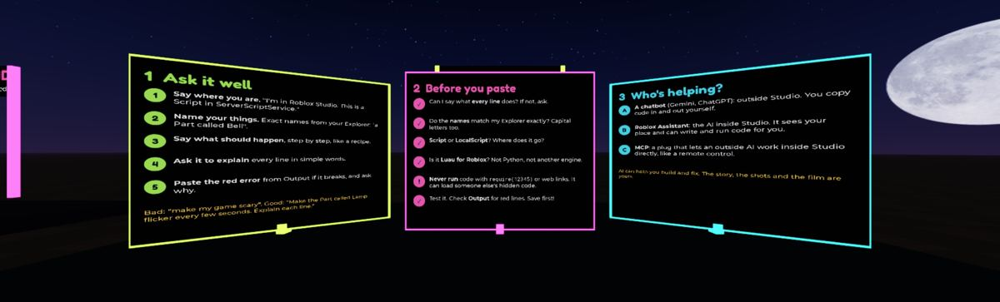
| Kind | Where it lives | What it can do |
|---|---|---|
| A chatbot: Gemini (your school account), ChatGPT | In the browser, outside Studio | Explains, writes code, gives ideas. It can't see your place: you copy things in and out yourself. |
| Roblox Assistant | Inside Studio (the Assistant button) | Sees your place. It can plan, write and run code, build objects, make meshes and materials, and playtest. Powerful, so be specific and check what it changed. |
| An AI through MCP | Outside Studio, connected to it | MCP (Model Context Protocol) is a plug that lets an outside AI, like Claude, work inside Studio directly: read your place, add parts, run scripts. The practice place you're walking through was built this way, with your teacher directing it. |
Roblox calls this "agentic": the AI doesn't only answer, it does things. That's why the rule matters: AI helps, you direct.
| Weak prompt | Strong prompt |
|---|---|
| make my game scary | I'm in Roblox Studio. Make the Part called Lamp flicker every few seconds, like a broken street light. Explain each line. |
| fix my code | This Script is inside a Part called Door. It should turn the door see-through when a player touches it, but nothing happens. Output says: [error]. Here's the script: [script]. |
| write my story | My rule is [rule]. Ask me 5 questions that would help me find a better twist. Don't write the story for me. |
| I want to… | Ask |
|---|---|
| understand a script | Explain this Roblox Luau script line by line, like I'm 12: [script] |
| make something move | Write a Luau Script that makes the Part called Platform move up and down slowly forever, using TweenService. Where does it go? |
| make something happen on touch | When a player touches the Part called Trigger, play the Sound inside it once. Explain each line. |
| fix an error | What does this Roblox error mean, and how do I fix it? [paste the red line] |
| find a setting | In Roblox Studio, which Lighting properties make a scene look like dusk with fog? |
| learn a tool | How do I use the Animation Editor in Roblox Studio to make a character wave? Short steps. |
| get feedback | Here's my shot list: [paste]. What's the weakest shot, and how could I make it stronger? |
-- Lines starting with -- are comments: notes for humans. The game ignores them.
-- "local" gives something a name. script.Parent = the thing this script is inside.
local part = script.Parent
-- Find something by its exact name.
local light = part:FindFirstChild("PointLight")
-- An event: run this when something touches the part.
part.Touched:Connect(function(hit)
-- Only if the light was found...
if light then
-- ...change a property, like in the Properties window.
light.Enabled = false
end
end)
-- Every "function" and every "if" needs its own "end".
-- Pause for 2 seconds.
task.wait(2)Names in quotes ("PointLight") must match your Explorer exactly, capital letters too. If the AI's names are different from yours, change them in the code.
| ✓ | I can say what every line does. If not, I ask. |
| ✓ | The names match my Explorer exactly. |
| ✓ | I know if it's a Script (runs on the server, goes in a Part or ServerScriptService) or a LocalScript (runs for one player, goes in StarterPlayerScripts). |
| ✓ | It's Luau for Roblox, not Python or code for another game engine. |
| ✓ | I saved a new version of my file first. |
| ✓ | After pasting, I press Play and check Output for red lines. |
Danger signs: don't run code that has these, from AI or from anywhere else:
require(123456789) with a number inside: it loads someone else's hidden code into your place. loadstring, getfenv, HttpService or web links: they can run or fetch code you can't see. Long lines of random letters and numbers: hidden code. Ask me first.
AI sounds sure even when it's wrong. Common mistakes: it invents a property or a button that doesn't exist, uses an old way of doing things, or uses names that aren't in your place. If something doesn't work, tell it exactly what happened and paste the error. If it goes round in circles, check the official docs or ask a classmate.
| Yes, and note it in your diary | No |
|---|---|
| Ideas for rules and twists (you choose and change them) Explaining tools, settings and code Writing and fixing scripts for effects, cameras and animations Roblox Assistant building a prop you asked for Feedback on your shot list and timing | Writing your story for you Generating the video, or any shot of it "One prompt" films: an AI building the whole set and scene AI voices pretending to be real people |
In your diary, every AI use gets one line: what I asked, and what I changed or learned.
| Setting | Choose | Why |
|---|---|---|
| Record Entire Screen / Selected Portion | Selected Portion, dragged over the game view | no Studio buttons in your clip |
| Options → Save to | a folder called In This Town clips | not a messy Desktop |
| Options → Microphone | None | sound goes in during editing |
| Options → Show Floating Thumbnail | off | the file saves straight away |
| Options → Show Mouse Clicks | off | no circles in your film |
Click Record. Wait one second, do the move, wait one second, then stop with the button in the menu bar (or Cmd + Ctrl + Esc).
For an upright 9:16 video like TikTok, make the Studio window tall and narrow before recording, or record wide and crop in Canva. Pick one and stick to it for every shot.
☐ menus hidden ☐ 1 second still at the start and end ☐ slow, smooth movement ☐ renamed straight away: shot_03_take2.mov
No sound: a Mac screen recording doesn't record the game's sound. Choose your sounds at Station 6, then add them in your editor.
Cmd + Shift + 4, then drag over the area. Press Space after it to capture one whole window.
The questions people ask most. Can't find yours? Ask a classmate, then me.
Does it have to be scary?
No. The trend is often creepy, but funny and weird work just as well. "In this town, everyone walks backwards on Tuesdays" or "In this town, the pigeons are in charge" are great rules. The four steps stay the same: rule, consequence, rule-breaker, twist.
My rule is boring. How do I make it better?
Make it something you can see, make it specific, and give it a time or a place. "Bad things happen at night" is vague. "In this town, if the bell rings twice, nobody may move until sunrise" is a rule you can film. Try the brainstorm prompt in Lesson 1, then change the idea until it feels like yours.
Can I put a classmate or a teacher in my story?
Not as a character or a joke. No real people from school, no classmate as the victim. A classmate can lend their voice or help you film, and then they go in the credits.
Do I have to do the Örkény challenge?
No, it's a bonus. If you like strange short stories, read a few egyperces on MEK and adapt one. Use your own words in the video and credit him at the end: "Based on Örkény István: [title]". There's an award for the best one at the Premiere.
How long should my video be?
30–60 seconds, end card included. Basic: 30–45 s. Advanced and Pro: 45–60 s. Shorter and tight beats longer and slow.
I don't have a Roblox account, or I forgot my password.
You need an account to log in to Roblox Studio. If you're under 13, a parent or guardian has to agree to the account. Tell me at the start of Lesson 1, not in the middle of Lesson 4. Forgotten password: use the email recovery, which is why it's worth adding an email to your account.
Where do I get the practice place?
It's attached to the assignment in Classroom: InThisTown_Tutorial.rbxl. Download it, then open it from Roblox Studio with File → Open from File.
How do I copy something from the practice place into my own place?
Open both files in Studio: they open in two separate windows. In the practice place, find the thing in the Explorer (props are in ServerStorage → SetKit), click it and press Cmd + C. Switch to your own window, click Workspace in its Explorer and press Cmd + V. Check the window title so you know which file you're in.
Where should I save my files?
Your Studio file: a folder called In This Town, with a new version number every lesson (name_inthistown_v3.rbxl). Your clips: a folder called In This Town clips. Copy both to your Google Drive at the end of each lesson, so a crash or a different computer doesn't cost you your work.
Studio crashed and my work is gone.
Open your last numbered version. When Studio restarts after a crash it usually offers to recover your work: say yes. Then save more often: Cmd + S every time you finish something.
Can I use a whole ready-made town from the Toolbox?
A few props from the Toolbox are fine. A whole finished map isn't: the set is part of your work and part of your mark. Build the places your shots need, and use the prop shop for the small things.
Things fall apart or fall over when I press Play.
Tick Anchored on every piece. For a whole model: select it, then tick Anchored in the Properties window, and it applies to every part inside.
Can I change how my actor looks?
Yes. Your own avatar is the easiest actor. For other characters: Avatar tab → Rig Builder makes a plain character, then change its colours with Body Colors in the Explorer, or copy clothes from the Toolbox. Different colours are often enough to tell two characters apart.
How do I get two characters in one scene when I'm the only player?
Two ways. Easy: copy your avatar (copy while playing, paste after stopping) as many times as you need; anchored copies stand still while you play the moving one. Fun: Test tab → Clients and Servers → choose 2 players → Start. Two game windows open; you control one character in each, and film from either.
My animation plays in the Animation Editor but not when I press Play.
That's normal. An animation from the editor only plays in the game if it's published to Roblox and started by a script (that's the Pro level). For Basic and Advanced, record the animation straight from the editor: place the Studio camera, start recording, press Space. Reference B has the details.
My actor's pose resets when I press Play.
The Humanoid stands characters back up. If the actor only needs to stand still in a pose, delete its Humanoid and anchor all its parts. If it needs to move, use the Animation Editor and record from the editor.
How do I make my character sit?
Put a Seat in your set (the prop shop bench has one). Walk onto it while playing and your character sits. To make a copied actor sit without playing, pose it in the Animation Editor.
The free camera won't start.
It only works while the game is playing, and only with the left Shift: Left Shift + P. If nothing happens, click inside the game view first so it has the keyboard.
Why is there no sound in my recording?
A Mac screen recording doesn't record the game's sound. That's expected. Pick your sounds at Station 6, write them in your shot list, and add them in your video editor.
Where did my recording go?
Wherever Cmd + Shift + 5 → Options → Save to is set. Usually the Desktop. Set it to your In This Town clips folder, and rename each clip straight away: shot_03_take2.mov.
My video is upright but my actor is off to the side.
You recorded wide and the editor cropped it to 9:16. Either keep your actor in the middle third of the frame while filming, or make your video wide (landscape) instead. Pick one for the whole film.
Can I record with my phone?
No: a phone filming the screen looks blurry and shaky. Use Cmd + Shift + 5 on the computer.
Can I use a song I like?
Not a famous song: it can get your video muted or taken down, and it isn't yours. Use the music library in Canva or iMovie, or the free audio in Roblox's Creator Store. Keep music quieter than any voice.
Can I use an AI voice for the narrator?
Yes, a generic text-to-speech voice is fine, and it's part of the trend's look. Never a voice that copies a real person. Write in your diary which tool you used.
Can I use AI-generated music or sound effects?
Yes, if the tool lets you use what it makes, and you write it in your diary. Sound libraries in your editor are usually quicker.
English or Hungarian?
English is preferred, Hungarian is fine too. Whatever the language, captions are required.
Is using AI cheating?
Not if AI helps and you direct. Asking for rule ideas, explanations, a script you then understand, or help fixing an error is fine. Making the whole video with AI, or pasting code you can't explain, isn't. Every AI use goes in your diary: what you asked and what you changed.
Which AI can I use?
Gemini on your school account, ChatGPT, and the Roblox Assistant inside Studio. If the Assistant button isn't there on your account, use one of the others.
The AI gave me code. How do I know it's safe to paste?
Read the checklist in Reference G. In short: you know where it goes, you can say what each part does, it doesn't ask for anything strange (like require() with a number, or getting data from the internet), and you saved a version first.
Can I work with a friend?
In grade 6 you can work in pairs. You share one Story Doc, but each of you writes your own diary lines every lesson, with your name. Pairs work on one computer or pass the file. From grade 7 up, everyone makes their own film, though a classmate can lend a voice or help you film.
Do I get marked on how good it looks or on the idea?
Both, plus how you worked. Four parts: it works, thinking (the story), craft (set, shots, edit) and process (Story Doc and diary). What matters most is that you try, finish something and can say how you made it. A simple-looking film with a great rule and an honest diary can get a 5.
Can I pick a higher level?
Yes, any time. And if your level feels like too much, for example Pro without any coding experience, talk to me and we pick the one that fits.
Can I post my video on TikTok or YouTube?
We show every film at the Premiere. Posting it anywhere else is up to you and your parents, and never with a classmate's voice or name in it without their OK.
I missed a lesson. What do I do?
Read that lesson's Read First box, look at your Story Doc, and do the most important step: the story before the set, the set before filming. Write a diary entry anyway, saying what you caught up on.